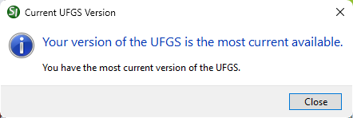
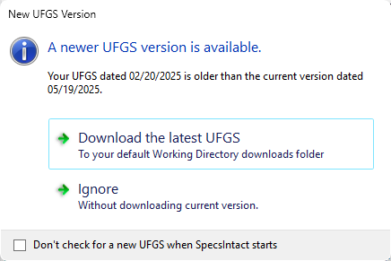

This command can only be executed from the SpecsIntact Explorer's Help menu.
The Check Current UFGS Version provides important version information about your UFGS Master that will appear when SpecsIntact opens or when you click the Check UFGS Version button on the About SpecsIntact window. The Current UFGS Version window appears if your UFGS Master is the most current version available, or when an older version is detected, the New UFGS Version window opens and offers the option to Download the latest UFGS to your default Working Directory's downloads folder or Ignore without downloading the current version. This window will automatically appear when you open SpecsIntact following a UFGS Master release. The UFGS Master is released quarterly, at the end of February, May, August, and November.
 It is important to keep your UFGS Master up-to-date. Although not recommended, this feature can be turned off by checking the Don't check for a new UFGS when SpecsIntact starts option at the bottom of the New UFGS Version window. To access the controls for the version checking information, refer to the SpecsIntact Explorer's Setup menu > Options > General tab, below Check for Updates.
It is important to keep your UFGS Master up-to-date. Although not recommended, this feature can be turned off by checking the Don't check for a new UFGS when SpecsIntact starts option at the bottom of the New UFGS Version window. To access the controls for the version checking information, refer to the SpecsIntact Explorer's Setup menu > Options > General tab, below Check for Updates.
Examples
 The message below will appear when your UFGS Master is the most current:
The message below will appear when your UFGS Master is the most current:

 The message below will appear when your UFGS Master is out of date:
The message below will appear when your UFGS Master is out of date:

While the UFGS Master is preparing to download, you may continue to work. After it finishes, the Restore window will open automatically, allowing you to complete the update process. Wait for SpecsIntact's notification of a successful UFGS Master download before turning off your computer.